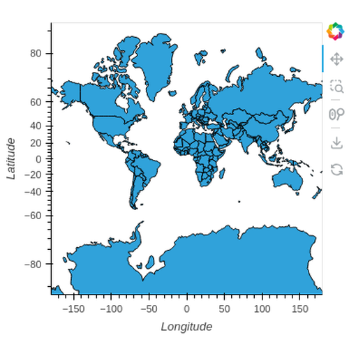
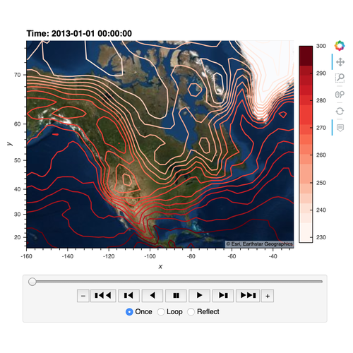
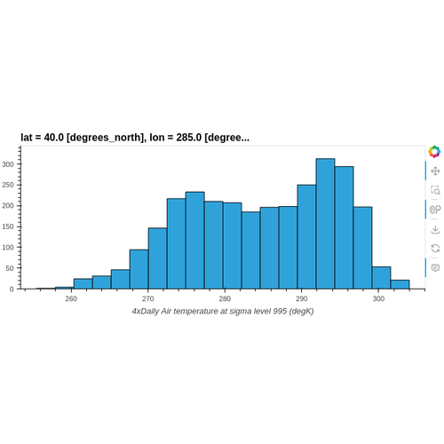
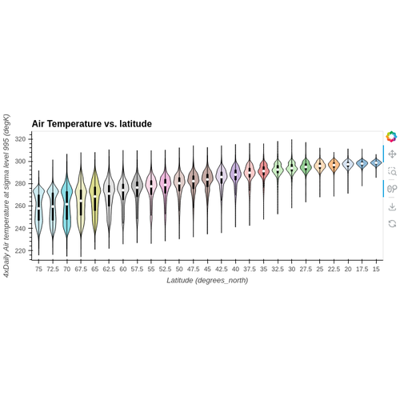

Reference Gallery#
Find the list of supported libraries on the Integrations page.
Tabular#
Andrewscurves

Area
Bar
Barh

Bivariate

Box

Errorbars

Heatmap

Hexbin

Hist

Kde

Labels

Lagplot

Line
Ohlc

Parallelcoordinates
Paths
Scatter

Scattermatrix
Step
Table

Violin

Geopandas#
Points

Polygons

Xarray#
Bar

Contour

Contourf

Hist

Image

Kde
Line

Quadmesh

Rgb

Vectorfield

Violin
